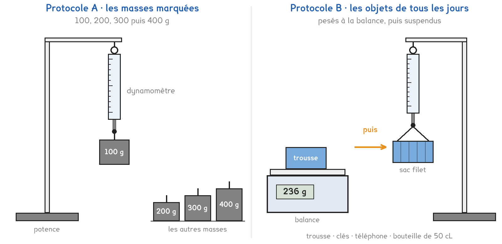

CAP · toutes spécialités · TP commun CAP-02
Masse et poids, est-ce la même chose ?
1 figure
Sujet. Avant de partir en vacances, on accroche la valise à un pèse-bagage : il affiche 18 kg. Au laboratoire, un appareil qui lui ressemble, le dynamomètre, affiche des newtons.
Problématique : masse et poids, est-ce la même chose ?
a) Compléter le tableau.
| La masse | Le poids | |
|---|---|---|
| Son symbole | m | …………………… |
| Son unité | ………………………………………… | ………………………………………… |
| L’appareil qui la mesure, entourer | balance · dynamomètre | balance · dynamomètre |
Le dynamomètre de votre poste porte une échelle graduée.
b) Relever le plus grand nombre de l’échelle, son calibre : …………………… N
Série · des grammes aux kilogrammes. On divise par 1 000. Le premier est fait.
| 100 g = 0,1 kg | 300 g = …………………… kg | 50 g = …………………… kg |
|---|---|---|
| 250 g = …………………… kg | 1 500 g = …………………… kg | 0,5 kg = …………………… g |
Deux protocoles répondent à la même question. Une partie de la classe prend A, l’autre prend B, et on compare à la fin.
Protocole A · les masses marquées. On accroche 100, 200, 300 puis 400 g au dynamomètre. La masse est écrite sur chacune : les valeurs sont rondes.
Protocole B · les objets de tous les jours. Trousse, clés, téléphone, bouteille d’eau : on les pèse à la balance, puis on les suspend au dynamomètre dans un sac filet.

c) Compléter le tableau pour comparer les deux protocoles.
| Protocole A | Protocole B | |
|---|---|---|
| Ce qu’on accroche | ………………………………………… | ………………………………………… |
| La masse, entourer | écrite dessus · pesée | écrite dessus · pesée |
| Sa limite, entourer | loin du quotidien · dépasse 5 N | loin du quotidien · dépasse 5 N |
Le choix se fait maintenant, avant de toucher au matériel. Le professeur peut imposer le protocole qui reste libre.
d) Entourer votre protocole, puis la raison.
Protocole A · Protocole B
parce que : des valeurs rondes · des objets qu’on porte vraiment
Avant de mesurer, on fait une hypothèse, sans calculer.
e) On accroche une masse de 200 g. Le dynamomètre affichera, entourer :
environ 0,2 N · environ 2 N · environ 200 N
Avant de commencer
Le dynamomètre se règle à zéro suspendu, sans rien accroché.
On ne dépasse pas le calibre : la bouteille pleine se pèse avec le dynamomètre de 10 N.
On lit quand l’objet ne bouge plus, les yeux en face de l’aiguille.
Sur l’objet immobile s’exercent deux forces : son poids P et la force F du dynamomètre.
f) Dessiner l’objet suspendu, puis tracer les deux forces P et F.
Le schéma se dessine sur la feuille du TP.
Chaque masse se convertit en kilogrammes avant le calcul.
g) Relever les quatre essais, puis calculer P ÷ m.
| Essai | 1 | 2 | 3 | 4 |
|---|---|---|---|---|
| La masse ou l’objet | ||||
| m en grammes | ||||
| m en kilogrammes | ||||
| P lu au dynamomètre (N) | ||||
| P ÷ m (N/kg) |
h) Pour l’essai 2, l’objet immobile, compléter les deux forces.
| La force | Direction | Sens | Valeur (N) |
|---|---|---|---|
| P, le poids | verticale · horizontale | vers le haut · vers le bas | …………………… |
| F, du dynamomètre | verticale · horizontale | vers le haut · vers le bas | …………………… |
Maintenant, toute la dernière ligne du tableau g.
i) Les valeurs de P ÷ m sont, entourer : presque les mêmes · très différentes
Elles valent environ …………………… N/kg. Hypothèse e confirmée : oui · non
j) Relever P ÷ m chez un groupe qui a pris l’autre protocole.
P ÷ m = …………………… N/kg. La même valeur que la vôtre, à 0,3 près : oui · non
Série · le poids se calcule. P = m × g, avec m en kilogrammes et g = 9,8 N/kg. Le premier est fait.
| m = 1 kg : P = 1 × 9,8 = 9,8 N | m = 2 kg : P = …………………… N |
|---|---|
| m = 0,5 kg : P = …………………… N | m = 10 kg : P = …………………… N |
| m = 100 g : P = …………………… N | m = 60 kg : P = …………………… N |
Pour finir, on revient au pèse-bagage.
k) Masse et poids, est-ce la même chose ? Répondre en une phrase.
Ce que ce TP a établi, à écrire sous la dictée du professeur :
À RETENIR
À compléter en classe, sur la feuille du TP.
TP commun de physique-chimie, toutes spécialités. Le travail se fait sur la feuille du TP : cette page en est la version à l'écran, sans les lignes à remplir. Rien n'est enregistré.